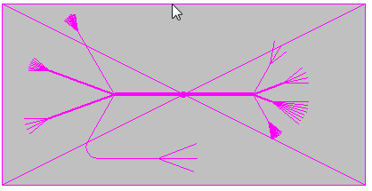
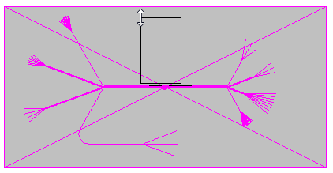
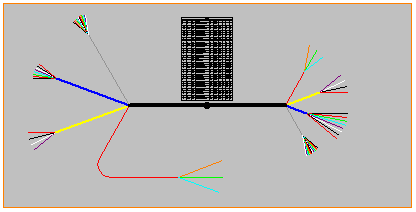

Activity: Creating a conductor table
This activity guides you through the creation of a conductor table.
Click the File tab → Open → Browse.
In the Open File dialog box, set the Look in: field to the folder where the activity files were downloaded.
Click nailboard_activity_2.dft and then click Open.
Click the Diagram tab→Tables group→Conductor Table command  .
.
Click the nailboard view.

Drag the cursor to the approximate location shown in the illustration.

Click to place the conductor table.

This completes the activity. Close the draft document without saving. Proceed to the activity summary.
In this activity you created a conductor table based on wire harness information stored in a nailboard view.
Click the Close button in the upper-right corner of the activity window.